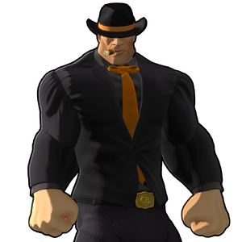

Jim C. Bringer
背景

Bringer Company 的创始人、所有者兼 CEO。该公司是一家集中式企业，专门研究并制造重型武器，这些武器利用 Faction Wars 的 Meta 中的 Min-Max 技术。公司总部位于一艘巨大楔形浮空母舰 The Singularity。
Jim 本人曾是 Faction Wars 的战斗人员，曾是 IZK，也就是 Izakia 氏族的一员。在 Bob H. Dee 的指导和教导下，他最终非常擅长制造 Meta War 中极高效率的机器。Bob H. Dee 是最博学、最高效的 Min-Maxer 之一。战争期间，Jim 创造了他称为 Triple Entente 的东西，由三辆高度先进的装甲载具组成：C. Flipper、#REDACTED# 和 #REDACTED#。
第一辆是楔形重装甲履带车，速度可达 130 MPH，并能在不到 5 秒内加速到 100 MPH。它的战斗职责是撞向敌方坦克，把它们撞飞，使其失去防御能力。
第二辆是流线型主战坦克，其炮塔形状像 #REDACTED#。它作为实验被建造，用来尝试复现 The Khabib 的技术。The Khabib 是 ISA，Inner Sphere Alliance 所属、最令人畏惧且最强大的坦克，而 ISA 是 IZK 的敌对派系。#REDACTED# 可达到 300 MPH，0 到 100 的加速时间不到半秒。
第三辆，也是 Triple Entente 中最强的一辆，是一个巨大楔形体，装有过度巨大的旋转机炮，全部由单个失衡独轮驱动。
Jim 目睹了 Malleus C. Gaming 执行的秘密行动，该行动让 IZK 得以偷走 The Khabib，并暴露出允许其装甲完全不受任何动能攻击穿透的外星技术。
根据 Jim 过去 Meta War 同僚的说法，Jim 被认为“毫不抱歉且难以想象地 ####### 愚蠢”。尽管如此，他认为自己是战术大师，可以用自己的“完美计划”轻易压倒任何对手。现实中，Jim 构想出的计划与战术一直会被认为在战术上毫无道理，通常包含大量资源浪费和不必要步骤，也极不可能带来正面结果。然而，当计划开始执行时，所有弱点都会被 Jim 纯粹的蛮力轻易解决，反过来让 Jim 相信自己的战术无懈可击，进一步强化他自认为很聪明的认知。
策略
Jim 的所有直接近战攻击都会造成 PURPLE 伤害！
第 1 阶段：第 1 阶段中，Jim 对所有伤害形式都为中性。攻击时，他会打出强力且范围很长的拳击，并无视任何吸引仇恨能力，因为整场战斗所有阶段中他的仇恨目标完全随机。HP 达到 70% 时，Jim 会解锁更多招式，包括长距离跳跃和臭名昭著的强力激光。HP 达到 40% 时，Jim 可以施放 Cataclysm，这是一种长时间引导、接近竞技场大小的核爆。站在 Cataclysm 中心半径内会被瞬间击杀，但离开中心越远，伤害会逐渐降低。施放 Cataclysm 后他会长时间处于被动状态，因此建议在 Cataclysm 结束后利用这段时间恢复队伍生命，并复活死亡玩家。
在 70%、50% 和 30% HP 时，Jim 会暂停并召唤一台 Jim’s Wedge，这是一种强力支援敌人，会从远距离开火。
第 2 阶段：第 2 阶段开始时，Jim 会进入 Flipper MK.II Abyssal，并在整个阶段中一直待在里面。Flipper 免疫所有伤害，会把任何伤害视为 Blocked。它拥有 3 个招式：以极高速度冲撞玩家，造成重度紫色伤害；部署 Jim’s Wedge；从任意距离向目标发射火箭弹幕。
经过 2 分钟后，4 座 Signal Tower 会落在竞技场四角。玩家必须站在这些 Signal Tower 内为其充能。单独充能时，每座 Signal Tower 需要 30 秒，但这个时长会随大厅玩家数量增加。多名玩家站在同一座 Signal Tower 下会提高充能速度。全部 4 座 Signal Tower 充能完成后，轨道打击会落在 Flipper 上并将其摧毁。
第 3 阶段：第 3 阶段由 2 个子阶段组成。Jim 的行为类似原本的第 1 阶段，但整个招式组都被强化。他挥击更快，连段更长，并解锁极其强力的连段终结技。除物理外，Jim 现在还会获得对所有元素 0.75x 的抗性。
HP 达到 70% 时，Jim 会解锁和之前相同的招式，但这些招式再次被强化。他的激光更宽更快，跳跃会造成更高伤害。Jim 现在也可能传送到距离较远的玩家身边，或在连段中途传送，打玩家一个措手不及。
HP 达到 50% 时，第 2 子阶段开始。经过较长冷却后，一个 Product Barrel 会落入竞技场。桶会直接落在 Jim 所站一侧的正对面。Jim 会变为无敌，并开始慢跑向桶。玩家必须在 Jim 到达前摧毁桶。如果 Jim 到达桶处，他会消耗它，治疗大量 HP，并获得长时间 Empowered 和 Enforced 增益。如果他因此治疗到 50% HP 以上，在再次达到该生命阈值前，他不能再投放更多桶。
Jim 的招式组会再扩展一次，解锁经常影响整个竞技场的强力招式。Nutnado 是一个强力龙卷风，会把玩家拉向空中。Nutdust 是全场范围的重力砸击，只会伤害处于空中的玩家，并施加持续 Heavy 状态效果。Tableflip 中，Jim 会扎稳脚步，瞄准自己朝向上的整片竞技场，冲击和随后波动都会造成伤害。最后，在 40% HP 时，Jim 会再次获得 Cataclysm。
统计
第 1 和第 2 阶段：
| 属性 | 抗性 |
|---|---|
| 物理 | 中性 (1x) |
| 火焰 | 中性 (1x) |
| 冰霜 | 中性 (1x) |
| 电击 | 中性 (1x) |
| 光耀 | 中性 (1x) |
| 暗影 | 中性 (1x) |
| 毒 | 中性 (1x) |
第 3 阶段：
| 属性 | 抗性 |
|---|---|
| 物理 | 中性 (1x) |
| 火焰 | 抗性 (0.75x) |
| 冰霜 | 抗性 (0.75x) |
| 电击 | 抗性 (0.75x) |
| 光耀 | 抗性 (0.75x) |
| 暗影 | 抗性 (0.75x) |
| 毒 | 抗性 (0.75x) |